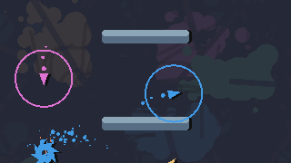

metrics
Even though measuring game feel objectively is pretty much impossible, we can still observe how/if elements of the game impact game feel. Without utilizing metrics, we would have to start building game feel completely from scratch every time we start making a new game.
By using metrics, we can observe game feel in different games and learn how different things end up affecting the feel. Ultimately, we want to be able to transfer things we learn from game x to help us make the feel of game y better, even though they might be totally different games (but still within our definition of “true” game feel).
The metrics of game feel are input, response, context, metaphor, polish, rules and consistency. We’ll go through input and response in this post.
input
Input encompasses the commands that the player issues the game and the physical controller the player uses. This includes the kinetic feeling of holding the controller, the build quality, springiness of buttons, weight of the controller; all of these affect the feel of giving the game inputs. Playing a game on a keyboard and mouse vs. with a controller affects the feel of the game a lot. Designers can’t really affect what input device the players want to use, but it’s useful to keep in mind how your game can be played on the most common input devices.
Different input devices allow for different depths for input. An ordinary button is binary, it’s either fully pressed down or not pressed at all. A joystick on the other hand has millions of different possible inputs it can give the game when we combine its horizontal and vertical axes. The quantity and quality of all buttons/joysticks etc. gives us a general idea of the depth of the input that the device can give. Good game feel is difficult to achieve if the game demands deeper input than the device the player is using can give. It would be very difficult to play a modern first person shooter with a NES controller.

A large part of the game feel of Donkey Kong Jungle Beat comes from the physical controller used to play it.
By changing the buttons that the player uses to execute verbs, we can change the feel of the game. Different combinations of input can have varying feels. Instead of every button having its own verb that it executes, we could instead bind all verbs to a single button and then vary the verb the player character executes based on the direction they’re holding on the d-pad. When designing the inputs the game requires, we should take into consideration the different hand positions players will have when giving inputs. The act of giving the input itself should be in some way satisfying to the player. Many games utilize a flicking motion, especially in mobile games, due to the satisfying flowing movement inherent in the gesture.
The inputs the player gives to the game can also be recorded for later studying, making it perhaps the only objective part of any metric in game feel. By studying inputs in relation to gameplay video you can easily discern precisely which inputs the player gave at any moment. This enables us to detect a certain kind of input that might be hard for the player to execute reliably, for example. This could then be smoothed out for better input feel.
response
Response is how the game processes the player’s input and displays it onscreen. Games can take very simple input and turn it into a very complicated response. If a game didn’t process input at all, player verbs would be very limited. If we were to move a character using unmodified input from a d-pad, the character would be limited to moving 1 unit each frame to a single direction because that’s precisely the value the d-pad sends to the game. When releasing the d-pad, the character instantly stops. If we instead modulate the input, we can slowly accelerate the character to the given direction when pressing on the d-pad and then decelerate when the direction is no longer being held.
This is a way to transform simple input to a more complicated response. By combining the depth of input possibilities with the complexity of the game’s response, we can kind of gauge the game’s overall sensitivity to input.
The quality of response can vary wildly. An input normally directly moves the player character in some way or executes a verb, but it can also change a global variable inside the game, like gravity. For example, input could reverse gravity as long as the button is held down. Response is not static, either. How input gets manipulated can change depending on the circumstances. Sticking with the gravity example, different levels could have different values for gravity. The player character would still be performing the same exact things, but the feel changes due to the changing response. Response can also change depending on context. If a player character interacts with an item, the selected item determines the outcome of the interaction.
In Chucksaw, the players only have a single button and a joystick as possible input. What the button does is determined by the length of time you hold it down for and if you’re near a saw or not.
next time...
We'll talk about two other metrics, context and rules, A.K.A. environments and mechanics.